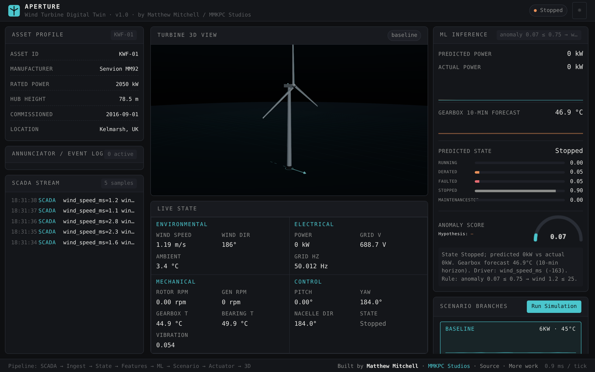

State model
Wind, power, rotor, generator, gearbox, bearing, pitch, yaw, and operational state share one readable runtime model.
Technical portfolio / digital twin systems
A browser-native hybrid digital twin for utility-scale wind turbines.
Aperture turns SCADA-style telemetry into a live turbine state, interpretable model outputs, fault scenarios, and operator decisions in one static web experience.
Built by Matthew Mitchell / MMKPC Studios

The project
The challenge was to make a digital-twin workflow that could be inspected, demonstrated, and deployed without a backend or a specialist runtime.
Aperture combines a typed SCADA replay, physics-light state propagation, interpretable JavaScript models, scenario branching, and operator controls. The result is not presented as a billing-grade wind-farm platform. It is a transparent reference system that makes the full reasoning path visible.
Every signal has somewhere to go. Every alert has a reason. Every intervention can be traced back through the loop.
Runtime architecture
One event path connects data, models, simulation, controls, and the 3D operator view.
What is inside
Wind, power, rotor, generator, gearbox, bearing, pitch, yaw, and operational state share one readable runtime model.
Power-curve regression, gearbox forecasting, state classification, and anomaly scoring run as inspectable browser modules.
Gearbox overheat, pitch stuck, yaw misalignment, bearing fault, icing, cut-out, and normal operation can be replayed.
Annunciation, alarm acknowledgement, pitch, yaw, shutdown, reset, recording, replay, and export connect the twin to action.
Evidence
The public surface includes the selected metrics, signal mapping, technical paper, evaluation notes, and figures. The raw dataset and full evaluation runner remain private development materials.
Public portfolio surface
This public mirror is intentionally curated. The original development repository remains private; the interactive showcase and published technical artifacts are available here for review and download.
{kind=link}